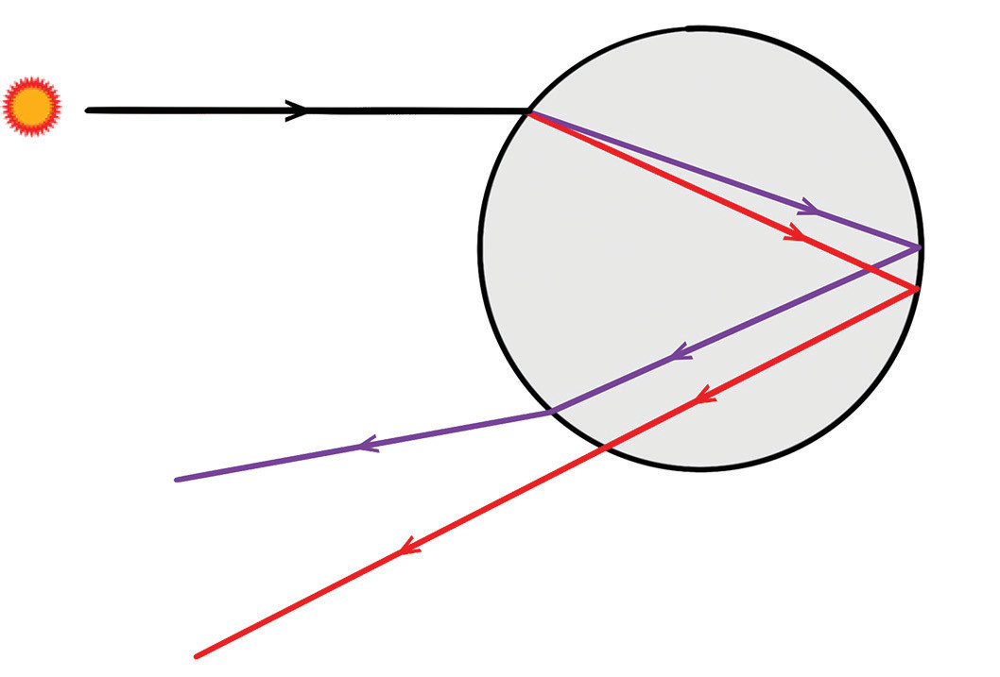
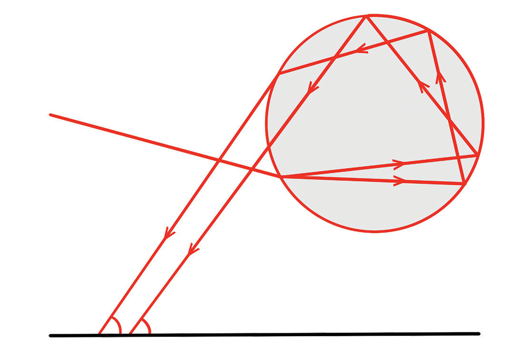

When you look at a rainbow, you see seven colours. They are always in the same order. That is red, orange, yellow, green, blue, indigo, and violet. An easy way to remember the colours and the order is to think of the name ROYGBIV, spelt from the first letter of each colour.
Primary rainbow
This rainbow forms at an angle of approximately 40° to 42° from the antisolar point. The light undergoes one internal reflection within the water droplets (see Figure 5.18(a)), creating the primary rainbow we observe. It is the brightest and most common rainbow with the red colour being on the outside (on top) and the violet colour in the inside (bottom);


Secondary rainbow
A secondary rainbow forms outside a primary rainbow, resulting from light undergoing two internal reflections within raindrops (see Figure 5.18(b)). This double reflection causes the colours of the secondary rainbow to appear in reverse order compared to the primary rainbow. The secondary rainbow is also considerably fainter than the primary one. This phenomenon showcases the complex interaction of light with water droplets, demonstrating how multiple reflections alter the path and appearance of the light.
Recombining colours of white light
We have seen that upon falling on a transparent medium such as a triangular glass prism or water droplet, white light splits into its colour components. What happens when the components of white light are passed through a second prism